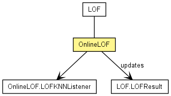

de.lmu.ifi.dbs.elki.algorithm.outlier
Class OnlineLOF<O,D extends NumberDistance<D,?>>
java.lang.Object
 de.lmu.ifi.dbs.elki.algorithm.AbstractAlgorithm<OutlierResult>
de.lmu.ifi.dbs.elki.algorithm.outlier.LOF<O,D>
de.lmu.ifi.dbs.elki.algorithm.outlier.OnlineLOF<O,D>
de.lmu.ifi.dbs.elki.algorithm.AbstractAlgorithm<OutlierResult>
de.lmu.ifi.dbs.elki.algorithm.outlier.LOF<O,D>
de.lmu.ifi.dbs.elki.algorithm.outlier.OnlineLOF<O,D>
- All Implemented Interfaces:
- Algorithm, OutlierAlgorithm, InspectionUtilFrequentlyScanned, Parameterizable
public class OnlineLOF<O,D extends NumberDistance<D,?>>
- extends LOF<O,D>

Incremental version of the LOF Algorithm, supports insertions and
removals.
|
Field Summary |
(package private) static Logging |
logger
The logger for this class. |
| Methods inherited from class java.lang.Object |
clone, equals, finalize, getClass, hashCode, notify, notifyAll, toString, wait, wait, wait |
logger
static final Logging logger
- The logger for this class.
OnlineLOF
public OnlineLOF(int k,
DistanceFunction<? super O,D> neighborhoodDistanceFunction,
DistanceFunction<? super O,D> reachabilityDistanceFunction)
- Constructor.
- Parameters:
k - the value of kneighborhoodDistanceFunction - the neighborhood distance functionreachabilityDistanceFunction - the reachability distance function
run
public OutlierResult run(Relation<O> relation)
- Performs the Generalized LOF_SCORE algorithm on the given database by
calling
#doRunInTime(Database) and adds a OnlineLOF.LOFKNNListener to
the preprocessors.
- Overrides:
run in class LOF<O,D extends NumberDistance<D,?>>
- Parameters:
relation - Data to process
getKNNAndRkNNQueries
private Pair<Pair<KNNQuery<O,D>,KNNQuery<O,D>>,Pair<RKNNQuery<O,D>,RKNNQuery<O,D>>> getKNNAndRkNNQueries(Relation<O> relation,
StepProgress stepprog)
- Get the kNN and rkNN queries for the algorithm.
- Parameters:
relation - Datastepprog - Progress logger
- Returns:
- the kNN and rkNN queries
getLogger
protected Logging getLogger()
- Description copied from class:
AbstractAlgorithm
- Get the (STATIC) logger for this class.
- Overrides:
getLogger in class LOF<O,D extends NumberDistance<D,?>>
- Returns:
- the static logger